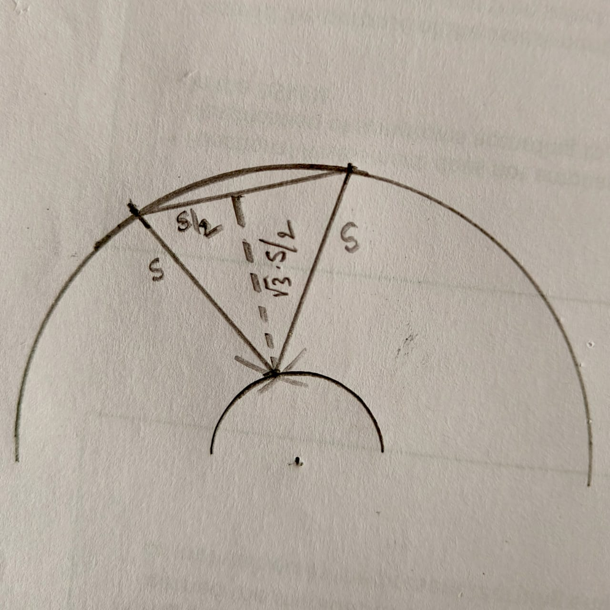
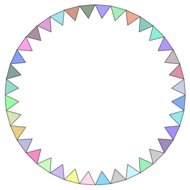
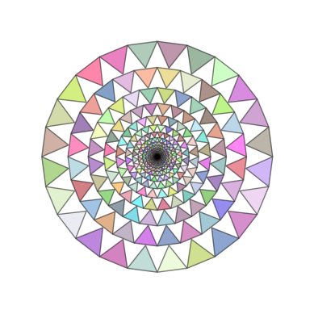
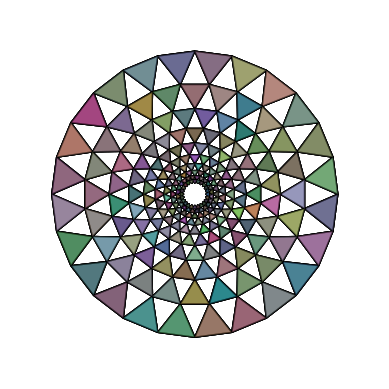
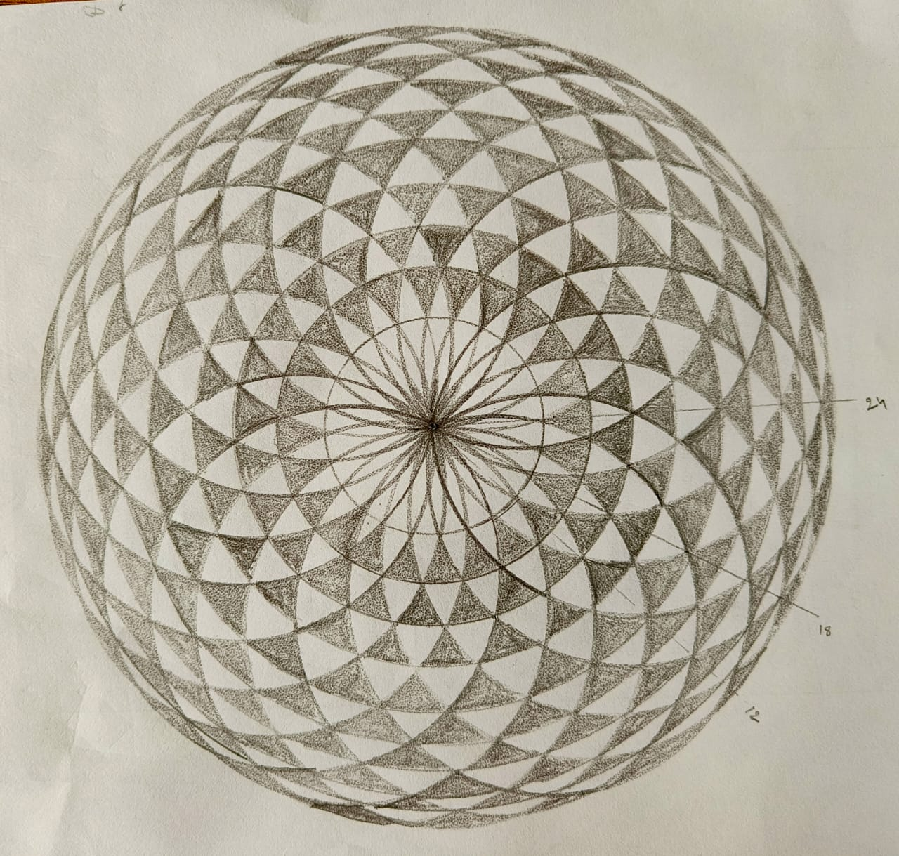

We will now look at how to draw traingles around the circle, so that we can create proper looking mandalas. Refer to the previous post for the backstory.
Triangles
Triangles have three sides and three vertices. We can use the polygon feature of python, if we are able to calculate where the three vertices are.
In the previous post, we have already seen how to identify \(n\) equally spaced points around the circle. Now, any two adjacent points can be the two vertices of the triangle. The third vertex needs to be below these two, since we do not want the circles to grow out. The key idea here is that the third vertex is on another circle which has a slightly lesser radius than this one.
What would be the difference in the two radii? That would be the height of the triangle. While we can choose any height, let us start with an equilateral triangle. In this case, basic trigonometry tells you the height. Refer to the picture below. I have made it deliberately exagerated with smaller radii and a larger side of the triangle.

We notice that for an equilateral triangle the difference in radii is \(\sqrt3*s/2\). Also, the line connecting the third vertex to the center is midway between the two points of the base.
The math
Consider a circle of radius \(r\). Divide the angle around the circle into \(n\) parts.
Consider the first angle \(\theta\). Find the \(x\) and \(y\) coordinates of the point on the circle by calculating \(rsin(\theta)\) and \(rcos(\theta)\). Now find the next angle 2\(\theta\). Find the \(x\) and \(y\) coordinates of the point on the circle by calculating \(rsin(2\theta)\) and \(rcos(2\theta)\).
theta = i*2*np.pi/n # calculate the angle of the first of n points
theta1 = (i+1)*2*np.pi/n # calculate the angle of the next point
x1 = r*np.cos(theta) # x coordinate of first point
y1 = r*np.sin(theta) # y coordinate of first point
x2 = r*np.cos(theta1) # x coordinate of second point
y2 = r*np.sin(theta1) # y coordinate of second point
Find the distance between these two using distance between two points formula. Take \(\sqrt3/2\) times this distance and subtract from \(r\). This is r1, the radius of the smaller circle, on which we will find the third vertext.
\(r1 = r - np.sqrt(3)*np.sqrt((x2-x1)**2+(y2-y1)**2)/2\)
The angle subtended by the third vertex at the center is half of \(\theta\) and 2\(\theta\). Using these, the third vertex coordinates are
import matplotlib.pyplot as pltimport numpy as npfrom matplotlib.patches import Polygonimport randomdef random_hex_color():return"#{:06x}".format(random.randint(0, 0xFFFFFF))figure, axes = plt.subplots()n =36# number of trainglesr =10# radius of the outer circlefor i inrange(n): theta = i*2*np.pi/n # calculate the angle of the first of n points theta1 = (i+1)*2*np.pi/n # calculate the angle of the next point x1 = r*np.cos(theta) # x coordinate of first point y1 = r*np.sin(theta) # y coordinate of first point x2 = r*np.cos(theta1) # x coordinate of second point y2 = r*np.sin(theta1) # y coordinate of second point r1 = r - np.sqrt(3)*np.sqrt((x2-x1)**2+(y2-y1)**2)/2# calculate the radius of the smaller circle x3 = r1*np.cos((theta+theta1)/2) # x coordinate of the third vertex y3 = r1*np.sin((theta+theta1)/2) # y coordinate of the third vertex vertices = np.array([[x1, y1], [x2, y2], [x3, y3]]) # all the vertices are grouped polygon = Polygon (vertices, facecolor=random_hex_color(), edgecolor='black', alpha=.5) # draws the polygon axes.add_patch(polygon)# Set the figure area squareaxes.set_aspect(1)# Set axes limitsaxes.set_xlim(-r, r)axes.set_ylim(-r, r)# Hide axes labelsaxes.set_xticks([])axes.set_yticks([])# Remove the borderfor spine in axes.spines.values(): spine.set_visible(False)plt.show()

Multiple layers
Now, we need to generate multiple layers. Each time, we can calculate the height of the triangle, identify the third vertex and go around. Then, the next circle radius will be current radius - the height of the triangle.
To implement this logic, we separate out the calculation of radius and the height into a separate function. Notice that this function returns two values in a list, and we use the values by specifiying the index of the list using [0] and [1].
The code looks like this. The comments in the code explain what is happening.
Code
import matplotlib.pyplot as pltimport numpy as npfrom matplotlib.patches import Polygonimport randomdef random_hex_color():return"#{:06x}".format(random.randint(0, 0xFFFFFF))figure, axes = plt.subplots()n =24# number of trainglesr =10# radius of the outer circlel =20# number of layerscurrent_r = rdef radius_smaller_circle (r,n): # separating out the radius and height calculations theta =2*np.pi/n # calculate the angle of the first point theta1 =2*2*np.pi/n # calculate the angle of the second x1 = r*np.cos(theta) # x coordinate of first point y1 = r*np.sin(theta) # y coordinate of first point x2 = r*np.cos(theta1) # x coordinate of second point y2 = r*np.sin(theta1) # y coordinate of second point h = np.sqrt(3)*np.sqrt((x2-x1)**2+(y2-y1)**2)/2# height of the triangle r1 = r - h # calculate the radius of the smaller circlereturn [h,r1] # returns two values in a listdef draw_triangles_around_circle(r,n):for i inrange(n): theta = i*2*np.pi/n # calculate the angle of the first of n points theta1 = (i+1)*2*np.pi/n # calculate the angle of the next point x1 = r*np.cos(theta) # x coordinate of first point y1 = r*np.sin(theta) # y coordinate of first point x2 = r*np.cos(theta1) # x coordinate of second point y2 = r*np.sin(theta1) # y coordinate of second point r1 = radius_smaller_circle (r,n)[1] # second of the two returned values x3 = r1*np.cos((theta+theta1)/2) # x coordinate of the third vertex y3 = r1*np.sin((theta+theta1)/2) # y coordinate of the third vertex vertices = np.array([[x1, y1], [x2, y2], [x3, y3]]) # all the vertices are grouped polygon = Polygon (vertices, facecolor=random_hex_color(), edgecolor='black',alpha=.5) # draws the polygon axes.add_patch(polygon)for i inrange(l): # for the number of layers, for each layer, calculate the radius of the smaller circle. current_r -= radius_smaller_circle(current_r,n)[0] # use the first returned value, height draw_triangles_around_circle(current_r,n) # draw the triangles# Set the figure area squareaxes.set_aspect(1)# Set axes limitsaxes.set_xlim(-r, r)axes.set_ylim(-r, r)# Hide axes labelsaxes.set_xticks([])axes.set_yticks([])# Remove the borderfor spine in axes.spines.values(): spine.set_visible(False)plt.show()

The final touch, again
Once again, it would be nice if the traingles do not line up but are staggered. So, we need to shift alternate layers by half the angle difference. We do this by introducing a condition and shifting.
The code and output below.
Code
import matplotlib.pyplot as pltimport numpy as npfrom matplotlib.patches import Polygonimport randomdef random_hex_color():return"#{:06x}".format(random.randint(0, 0xFFFFFF))figure, axes = plt.subplots()n =24# number of trainglesr =10# radius of the outer circlel =10# number of layerscurrent_r = rdef radius_smaller_circle (r,n): theta =2*np.pi/n # calculate the angle of the first of n points theta1 =2*2*np.pi/n # calculate the angle of the next point x1 = r*np.cos(theta) # x coordinate of first point y1 = r*np.sin(theta) # y coordinate of first point x2 = r*np.cos(theta1) # x coordinate of second point y2 = r*np.sin(theta1) # y coordinate of second point h = np.sqrt(3)*np.sqrt((x2-x1)**2+(y2-y1)**2)/2 r1 = r - h # calculate the radius of the smaller circlereturn [h,r1]def draw_triangles_around_circle(r,n, shift_theta=False):for i inrange(n): theta = np.linspace(0, 2* np.pi, n, endpoint=False)if shift_theta: theta += (np.pi / n) # Shift by 0.5 thetafor t in theta: theta1 = t +2*np.pi/n x1 = r*np.cos(t) # x coordinate of first point y1 = r*np.sin(t) # y coordinate of first point x2 = r*np.cos(theta1) # x coordinate of second point y2 = r*np.sin(theta1) # y coordinate of second point r1 = radius_smaller_circle (r,n)[1] x3 = r1*np.cos((t+theta1)/2) # x coordinate of the third vertex y3 = r1*np.sin((t+theta1)/2) # y coordinate of the third vertex vertices = np.array([[x1, y1], [x2, y2], [x3, y3]]) # all the vertices are grouped polygon = Polygon (vertices, facecolor = random_hex_color(), edgecolor='black',alpha=0.2) # draws the polygon axes.add_patch(polygon)for i inrange(l): shift_theta = (i %2==1) # true for odd i, false for even i current_r -= radius_smaller_circle(current_r,n)[0] draw_triangles_around_circle(current_r,n,shift_theta)# Set the figure area squareaxes.set_aspect(1)# Set axes limitsaxes.set_xlim(-r, r)axes.set_ylim(-r, r)# Hide axes labelsaxes.set_xticks([])axes.set_yticks([])# Remove the borderfor spine in axes.spines.values(): spine.set_visible(False)plt.show()

See how circles and curve appear on this picture, even though all we have drawn is traingles. Also, see how close this is to the colored mandala made with 24 circles.

There are significant differences too. The height of the triangles decreases outwards in one and inwards in the other. The mandala has circles in the center and then has triangles.
Now that we know how to create circles and triangles on circles of various diameters, maybe next we can try to combine them and create a proper mandala!